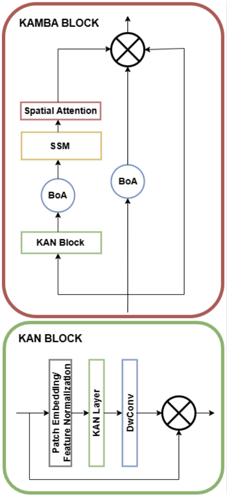

Publications (7)
Google Scholar →2026
-
 BOFlow: Exploration-Aware Bayesian Optimisation in Workflow Space for Agent EvolutionAccepted at ACL Rolling Review (ARR), 2026
BOFlow: Exploration-Aware Bayesian Optimisation in Workflow Space for Agent EvolutionAccepted at ACL Rolling Review (ARR), 2026 -
 OPTiMACS: Learning Optimal Message Representations for Agentic CommunicationFindings of ACL 2026 · Microsoft MLADS · US Patent (filed), 2026
OPTiMACS: Learning Optimal Message Representations for Agentic CommunicationFindings of ACL 2026 · Microsoft MLADS · US Patent (filed), 2026
2025
-
-
-
